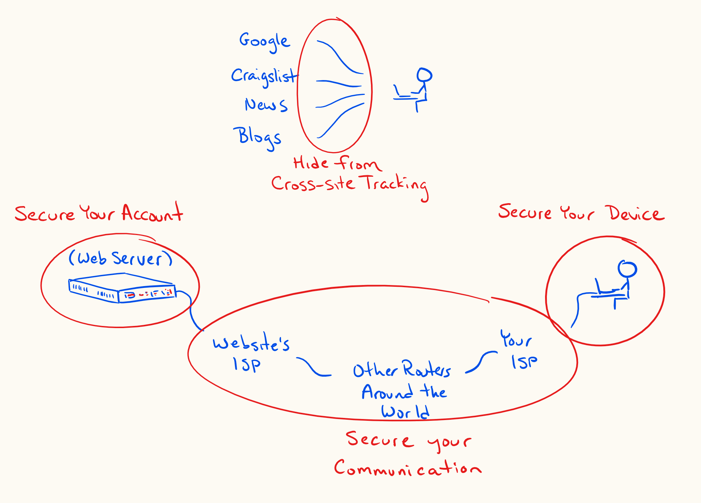
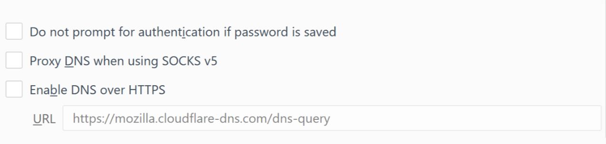

Online privacy and security
I am not a computer-security or privacy expert. I’m merely a computer scientist turned law student who has thought about these topics for a long time.
Deciding on a security or privacy strategy is deciding on a tradeoff: a tradeoff between security and privacy on the one hand and convenience and public participation on the other. To even connect a device to the internet is to accept a certain level of risk. Know what you’re trading. Know who you’re trusting and with what.
The EFF publishes a bunch of up-to-date security and privacy advice. I’ll be linking a lot to work they’ve already done, but will try to highlight what I think will get most of you most of what you need.

90% of the way
Secure your device
If it is important to you that a person with physical access to your device not be able to access any data on it, you’ve got to set up full-disk encryption. When you set up full-disk encryption, the data on your disk gets encrypted whenever you shut off your computer or phone. It can only be decrypted by using the password that you set up, generally at startup. If you were to lose your phone, or sell it, or have it seized at the border, nobody would be able to access your data without the password, even if they were to remove the disk and try to read the data directly: that data would be encrypted and unreadable.
On Windows, use BitLocker. On Android, use Secure Startup. On iPad and iPhone, use Data Protection. On macOS, use FileVault.
Secure your communications
Use HTTPS wherever possible., When you request a URL beginning in https://, the traffic is encrypted between you and the target server. For example, if you travel to https://sanchom.github.io, a person that views your request while it is in transit (e.g. somebody snooping on your wifi access point, your internet service provider, github’s internet service provider, etc.) will not be able to decode what you’ve asked sanchom.github.io to give to you. They wouldn’t be able to see whether you asked for https://sanchom.github.io/interveners.html or for https://sanchom.github.io/colophon.html. All they’d be able to tell is that you’ve requested something from sanchom.github.io. Further, when the server (sanchom.github.io) sends data back to you, it will also be encrypted, so nobody would be able to read the content while it is in transit. Of course, this doesn’t matter so much when you’re just visiting my website, but this encryption in transit is crucial when you’re banking, buying things online, or exchanging what you expect to be private messages.
To emphasize: HTTPS doesn’t prevent the website/server you’re talking to from seeing your request. That site needs to know what you’ve asked for and might even log your IP address which can be used to determine your location and your identity with help from your internet service provider.
Secure your accounts
HTTPS (and as mentioned in the next section, VPNs, and end-to-end encryption) protect the privacy of your communications. Passwords instead protect the security of your accounts. Online services use passwords to let you prove to them that you are who you say you are.
There are a few universally accepted recommendations regarding passwords:
- never use the same password for more than one account
- use strong (long) passwords that do not include dictionary words
- use a password manager to allow you to actually do the previous two things
- use two-factor authentication on your most important accounts (e.g. email, the password manager itself)
Limit how you can be tracked
Even when you are communicating over a secure channel, not logged into any accounts, the sites that you visit can ask your browser to store tokens that allow those sites to track your activity across sessions and even on other sites. Sites can also recognize your browser based on its unique configuration.
You can limit this by telling your browser to opt-out from tracking, by using a standard browser, with few modifications, and by limiting how long cookies can be stored. On your phone, you can use Firefox Focus, which makes it very easy to maintain next to no session history. Even on your computer, the Firefox browser has better security options than Google Chrome: Firefox makes it easier for you to delete all stored information whenever you close the browser. Tools like AdBlock or Privacy Badger can also help.
If you use a Google account, know what you’re sharing with them and what you’re allowing them to store. Opt out of personalized recommendations and analytics.
98% of the way
VPNs
A VPN (a virtual private network) lets you hide more information from your internet service provider (e.g. Shaw, Telus) and from the websites you visit. Your service provider would no longer see what websites you’re connecting to. The websites you’re connecting to would no longer see your IP address (they’d see an IP address of the VPN provider instead). VPN connections also encrypt traffic between your device and the VPN, even non-HTTPS traffic. Your ISP would no longer be able to see any of the traffic between you and the internet.
When you use a VPN, you’re moving some of the trust that you would normally place in your internet service provider (ISP) to your VPN provider. Your ISP would no longer see and potentially log your traffic, but your VPN provider might. So, choose a VPN provider carefully, paying attention to their logging policy and laws in the country where they are based.
Some caution though: it is actually tricky to set up a VPN to absolutely route all traffic through the VPN. There are ways that you could inadvertently side-step your own VPN connection. For example, if your VPN isn’t always-on, any backup services that run in the background will send traffic over your non-VPN connection any time that your VPN is disconnected. If those services happen to start up before your VPN starts up, you’ll be revealing your true IP address to Google Drive, or OneDrive, or DropBox, etc.
Further, if you have other devices in your home that connect to accounts that you normally use via the VPN, the company running the account could link that information together. If you connect to your Google account on your phone and computer through a VPN, but your Chromecast or smart speakers connect to your Google account not through the VPN, Google would easily be able to determine that your VPN traffic should be attributed to the IP address associated with your Chromecast or smart speakers. The conclusion: to truly protect your IP address from Google or Amazon, etc. you’d have to either commit to not using smart devices outside of the VPN, or set up the VPN connection directly on your router, so that all traffic in your home is forced through the VPN.
There are other ways that a VPN might provide a false sense of security: it might leak DNS queries to your ISP, it might leak IPV6 connections to your ISP.
Domain Name Servers
The weakest link in all of the above may be the service that converts a website name that you’ve requested into an IP address. This is called a domain name server (DNS). Often, your computer and router will be set up to send those DNS queries to your ISP. This is one way that your ISP will be able to know what websites you’re visiting. But, there are ways to avoid leaking this information to your ISP. You can choose a VPN provider that handles DNS queries. Or, at least on the most recent versions of Firefox, you can ask for your DNS queries to get sorted out over HTTPS (they’ll be encrypted, and sent to a more trusted DNS service).

End-to-end encryption
End-to-end encryption means that messages are encrypted the entire way between you and the intended recipient. Nobody other than you two can read the messages, not even the company running the service. WhatsApp and Signal are two messaging services that work this way. They both use the same open-source encryption protocol. WhatsApp has an optional cloud-backup system that circumvents this encryption protection (your backups would be a way for somebody to get the unencrypted conversations), but you can keep that turned off. Signal has an optional, encrypted local-backup system.
Some other things to read or listen to
- McSweeney’s 54, The End of Trust.
- A Podcast Called INTREPID, a national security podcast, occasionally discussing government surveillance, CSIS, warrants, and Bill C-59.
- LawFare Podcast, another national security podcast, occasionally discussing encryption, government surveillance, offensive cyber warfare.
- Vice Motherboard’s Cyber podcast, focused on private internet security and how to avoid being hacked.
- An episode of CBC’s The Current about the vulnerabilities in smart devices.
Notes
1. ↑ EFF: Keeping Your Data Safe; EFF: Encrypting Data At Rest.
2. ↑ EFF: Encrypting Data In Transit.
3. ↑ The EFF publishes a browser extension, HTTPS Everywhere, which ensures as much traffic as possible is routed over HTTPS. But, while HTTPS is increasing in prevalence, not all websites even support HTTPS. This will protect your most important communications with banks, email services, etc., but will occasionally be unavailable on some sites that don’t consider their information to be worthy of encryption.
4. ↑ EFF: Creating Strong Passwords.
5. ↑ EFF: How to: Enable Two-Factor Authentication.
6. ↑ EFF: Panopticlick 3.0 (how unique does your browser appear to online trackers).
7. ↑ EFF: Privacy Badger.
8. ↑ Google: Privacy Checkup.
9. ↑ Amul Kalia, “Here’s How to Protect Your Privacy From Your Internet Service Provider”, Electronic Frontier Foundation (3 April 2017).
10. ↑ “Choosing the VPN That’s Right For You”, Electronic Frontier Foundation (9 June 2016).
11. ↑ Dann Albright, “How DNS Leaks Can Destroy Anonymity When Using a VPN, And How to Stop Them”, MakeUseOf (14 May 2015).
12. ↑ Nykolas Z, “DNS Security and Privacy — Choosing the right provider”, medium.com (18 April 2018).
13. ↑ “Transport-Layer Encryption or End-to-End Encryption?”, Electronic Frontier Foundation (24 November 2018).